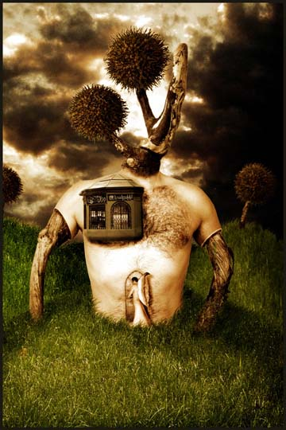

Teodoru Badiu
apocryphal art
Teodoru Badiu
apocryphal art
Teodoru Badiu (aka Apocryph) is 36 years old and lives in Vienna, Austria. He studied traditional art at the Künstlerische Volkshochschule in Vienna, and later "discovered the wonderful possibilities given by Photoshop and digital photography, and started to work with the computer and software like Photoshop, Bryce and Poser." He writes that he is influenced by Hieronymus Bosch, the 15th century Flemish mystic, and by the Dadaist Andre Breton, and "tries to get rid of logic in my works and give my fantasy the freedom it needs. My inspiration sources are multiple: religion, mythology and everyday life happenings. My goal is to create surreal worlds and creatures using real life elements and at the same time to make understandable the thoughts and ideas behind [my art]."
Not Your Temple
 |